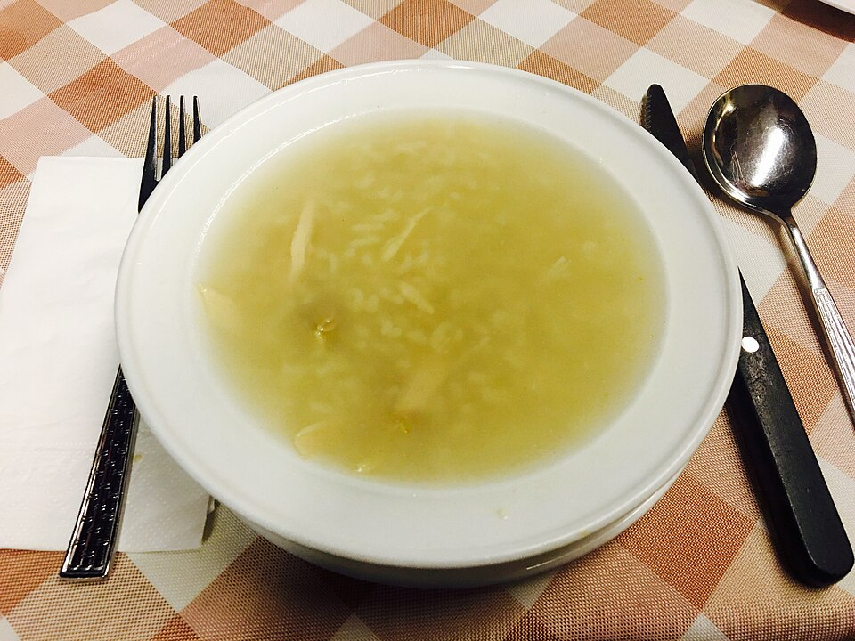

Sopas
Canja tradicional

Ingredientes
- 1 galinha (cerca de 2,5 kg) cortada em pedaços
- 2 colheres (sopa) de manteiga
- 1 cebola grande picada
- 4 raminhos de salsa picados
- 4 talos de cebolinha verde picados
- 4 litros de água (o suficiente para cobrir a galinha)
- sal a gosto
- 1/2 xícara de arroz cru lavado
Modo de preparo
- Numa panela grande, coloque a galinha, a manteiga e a cebola. Cozinhe em fogo alto até dourar (cerca de 10 minutos).
- Junte salsa e cebolinha, acrescente a água. Ferva, baixe o fogo e cozinhe até a carne ficar macia (cerca de 2 horas). Coe o caldo e reserve.
- Retire ossos e pele; corte a carne em pedaços de cerca de 2 cm. Reserve.
- Ferva 2 litros do caldo reservado até reduzir à metade. Junte a carne, tempere a gosto, deixe esfriar e congele (sem o arroz).
Observação
Para congelar já com arroz: no passo 4, após ferver, cozinhe o arroz al dente, junte a carne, tempere e congele. Congelamento: recipiente rígido forrado com plástico; depois embrulhe. Descongelamento: aqueça com cerca de 2 litros de água; ao ferver, junte o arroz e cozinhe até ficar macio.